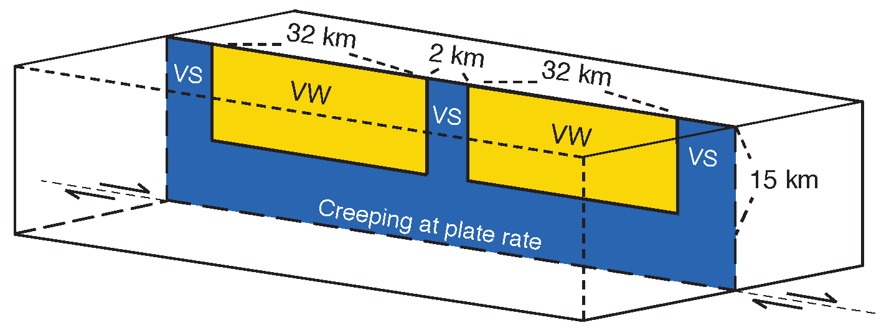

Many geophysical studies seek to shed light on the physical conditions governing fault operation and earthquake source processes by measuring the motion of Earth's surface and estimating rupture properties. The most robust inferences tend to be averaged or integrated quantities, which can obscure many of the details of the rupture process. Moreover, many geophysical inferences rely on the use of idealized rupture models that assume specific distributions of on-fault quantities. Thus, the relationship between geophysical observations of crustal deformation and failure and their actual characteristics is model-dependent and not directly evident.
We use numerical simulations of sequences of earthquakes and aseismic slip (SEAS) to explore the relationship between different models of fault zone physics and common seismological inferences, such as average static stress drop, average breakdown energy, apparent stress and radiation efficiency. By combining insight from a range of geophysical inferences, including seismologically estimated earthquake source properties, heat flow constraints, slow interseismic motions, and the population dynamics of slip events, we aim to constrain plausible physical conditions for natural faults.
One aspect of our work has been examining the relationship between seismological inferences related to earthquake energy partitioning and their dependence on earthquake rupture style and absolute shear stress levels on faults. The figure above compares the characteristic evolution of slip and average shear stress for two commonly considered rupture styles for large earthquakes, a self-healing pulse on a quasi-statically strong but dynamically weak fault and a crack-like rupture on a persistently weak fault (Lambert et al., 2021 Nature). Kinematically, the rupture styles are distinguished bythe relationship between local slip duration and total rupture duration, where self-healing pulses have short local sliding durations compared to the total rupture duration, whereas the two durations are comparable for crack-like ruptures. The two ruptures shown produce comparable average static stress drop and potency but exhibit very different overall evolution of average shear stress and energy partitioning during rupture. Our work shows that increasingly sharper self-healing pulses experience increasingly greater dynamic stress undershoot, with the dynamic stress drop being larger than the static stress drop, resulting in more radiated energy (blue shaded region) than crack-like ruptures with the same static stress drop.
| Lambert, V., Lapusta, N. and S. Perry (2021). Propagation of large earthquakes as self-healing pulses and mild cracks. Nature 591, 252-258. [ doi ] [ SharedIt ] |
| Lambert, V., Lapusta, N. and D. R. Faulkner (2021). Scale dependence of earthquake rupture prestress in models with enhanced weakening: Implications for event statistics and inferences of fault stress. J. Geophys. Res. Solid Earth 126, e2021JB021886. [ doi ] |
| Lambert, V. and N. Lapusta (2020), Rupture-dependent breakdown energy in fault models with thermo-hydro-mechanical processes. Solid Earth, 11(6),2282-2302. [ doi ] |
| Perry, S., Lambert, V., and N. Lapusta (2020), Nearly magnitude-invariant stress drops in simulated crack-like earthquake sequences on rate-and-state faults with thermal pressurization of pore fluids. J. Geophys. Res. Solid Earth 125, e2019JB018597. [ doi ] |
Our simulated self-healing pulses (vs. crack-like ruptures) result in radiated energy to moment ratios that are much larger than (vs. comparable to) inferences for large earthquakes from teleseismic measurements (pink stars and triangles) (Lambert et al., 2021 Nature). The higher values of radiated energy for self-healing pulses are compatible with limited regional estimates from crustal earthquakes (green triangles). If the inferred observational discrepancy is reliable, it suggests a systematic difference between the driving mechanisms of large earthquakes on crustal faults and subduction zones. However, the discrepancy may also arise from various forms of uncertainty in the seismological estimates, including substantial differences between teleseismic and regional estimates. Our findings suggest that re-examining the validity of seismological estimates of radiated energy from earthquake ruptures using in part numerically simulated sources, would provide significant further insight into earthquake physics, driving mechanisms of large earthquakes and hence seismic hazard.
| Lambert, V., Lapusta, N. and S. Perry (2021). Propagation of large earthquakes as self-healing pulses and mild cracks. Nature 591, 252-258. [ doi ] |
Faults accommodate tectonic plate motion through an array of seismic (fast) and aseismic (slow) modes of deformation, including earthquakes and slow-slip transients. Improving our understanding of the evolution of shear stress on faults over periods of slow and fast motion is crucial for assessing how earthquakes start, grow and ultimately stop. The style of motion along faults can depend on various forms of heterogeneity in frictional resistance and weakening behavior, fault structure, as well as loading. Examining the population dynamics of slip events on faults can illuminate the spatio-temporal properties of the underlying fault physics.
| Lambert, V., Lapusta, N. and D. R. Faulkner (2021). Scale dependence of earthquake rupture prestress in models with enhanced weakening: Implications for event statistics and inferences of fault stress. J. Geophys. Res. Solid Earth 126, e2021JB021886. [ doi ] |
Physics-based numerical modeling of earthquake source processes aims to combine available real-world data and physical principles to improve our understanding of fault behavior. The ultimate aspiration is to develop models that have predictive power for quantities of interest for seismic hazard, such as the probability of an earthquake rupture jumping from one fault segment to another. However, the outcomes of numerical simulations can depend on choices in numerical procedure and physical approximations.
A question of great importance to seismic hazard is how to assess the predictive power of numerical earthquake models, as well as constraints from different geophysical inferences, such as earthquake population statistics and earthquake source properties like static stress drop. We aim to address such questions by exploring the sensitivity of numerical earthquake sequence simulations to choices in numerical discretizaton as well as common choices in physical approximations, such as the treatment of inertial effects during dynamic rupture. Our studies suggest that some physical quantities may be reliably determined from well-formulated numerical models, whereas other quantities, such as the probability of an earthquake rupture jumping from one fault to another, are highly sensitive to choices in numerical parameterization and physical assumptions. The extreme sensitivity of some hazard parameters in numerical studies to small perturbations may also suggest that such measures would be highly sensitive to physical perturbations on natural faults, implying that such hazard parameters are highly unstable and impractical to estimate in a reliable manner. This motivates the exploration of more meaningful hazard parameters, a task which is well-suited for well-formulated physics-based modeling.
Above is an example model geometry for a crustal fault with two co-planar seismogenic fault segments governed by velocity-weakening (VW) friction and separated by a relatively strong velocity-strengthening (VS) barrier that creeps interseismically and impedes rupture propagation. We have been using this relatively simple model setup to examine the sensistivity of fault interactions in numerical SEAS simulations to choices in numerical procedure and physical approximations. On the right is a video demonstrating a relatively short sequence of slip events wth slip contours of ruptures that jump across the unfavorable VS barrier colored blue and plotted every 0.5 seconds. Ruptures that are confined to individual fault segments are plotted in red and interseismic slip contours are plotted in black every 10 years. We have found that the frequency of ruptures that jump across the unfavorable VS barrier is highly sensitive to modeling choices such as numerical resolution and the treatment of inertial (wave-mediated) effects during ruptures.
| Lambert, V. and N. Lapusta (2021). Resolving simulated sequences of earthquakes and fault interactions: Implications for physics-based seismic hazard assessment, J. Geophys. Res. Solid Earth 126, e2021JB022193. [ doi ] |
| Erickson, B. et al. (2020), The Community Code Verification Exercise for Simulating Sequences of Earthquakes and Aseismic Slip (SEAS). Seis. Res. Lett. 91(2A), 874-890. [ doi ] |
| [11] Jiang, J., Erickson, B.A, Lambert, V. et al. (2022). Community-driven code comparisons for three-dimensional dynamic modeling of sequences of earthquakes and aseismic slip, J. Geophys. Res. Solid Earth 127, e2021JB023519. [ doi ] [ pdf ] |
Deformation along fault zones is observed to be highly localized within Earth's upper crust, though less is known about the deeper structure of fault shear zones, which are expected to become more distributed within the warmer, ductile regions of the lower crust and upper mantle. Fault slip relaxes lithospheric stress imposed by mantle flow, and in turn transfers stress to the ductile regions. The interplay of these systems governs the style of deformation at plate boundaries including the recurrence of seismic events. Such deep processes remain challenging to explicitly incorporate in numerical simulations of earthquake sequences. We have developed a framework that couples fault slip and viscoelastic deformation to simulate fault dynamics in the lithosphere-asthenosphere system. The method resolves the spontaneous nucleation of earthquakes and quasi-dynamic rupture propagation, as well as afterslip, slow-slip events (SSEs) and the modulation of strain rate incurred in the ductile regions. Our models illustrate how transient accelerations in the asthenosphere may follow both earthquakes and slow-slip events shortly after ruptures, depending on the rheology of the upper mantle and the magnitude of the event. Using such tools we hope to gain further insight into the spatio-temporal loading conditions for faults and fault networks, and the implications of more distributed deformation for earthquake sequences and surface deformation.
Figure: (Left) Simulated time series of slip velocity (top) and strain rate (bottom) over 250 years for a system with two vertical strike-slip faults embedded in an elastic layer overlaying a viscoelastic asthenosphere governed by power-law dislocation creep. (Right) Two spatial cross-sections of slip velocity on the two faults and strain rate within the viscoelastic bulk at instances in the post-seismic phase following ruptures on each of the two faults. The stress transfer resulting from slip on the two faults excites considerable transient acceleration of viscous flow in the ductile regions, which in turn modulates the loading conditions on the overlying faults and mediates delayed long-range stress interactions between the two faults.
| Lambert, V. and S. Barbot (2016), Contributions of viscoelastic flow in earthquake cycles within the lithosphere-asthenosphere system. Geophys. Res. Lett., 43, 10, 142-10, 154. [ doi ] |
| Barbot, S., Moore, J.P., and V. Lambert (2017), Displacement and Stress Associated with Distributed Anelastic Deformation in a Half-Space. BSSA, 107, 2, 821-855. [ doi ] |
This site was last modified on: